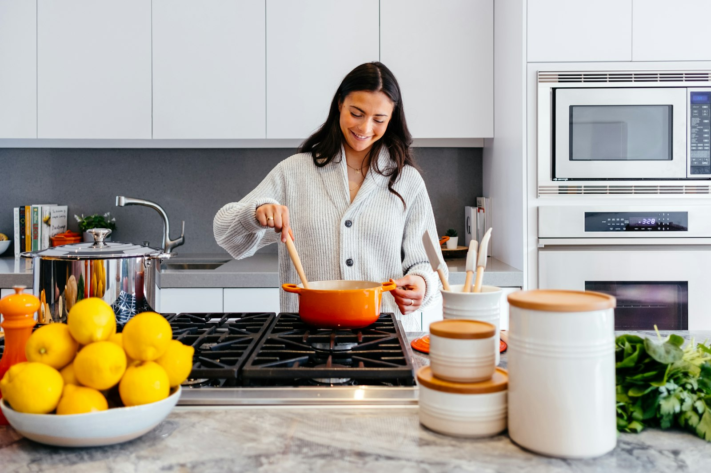
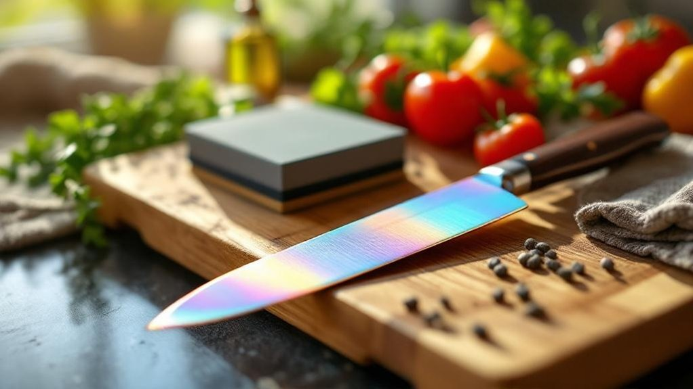
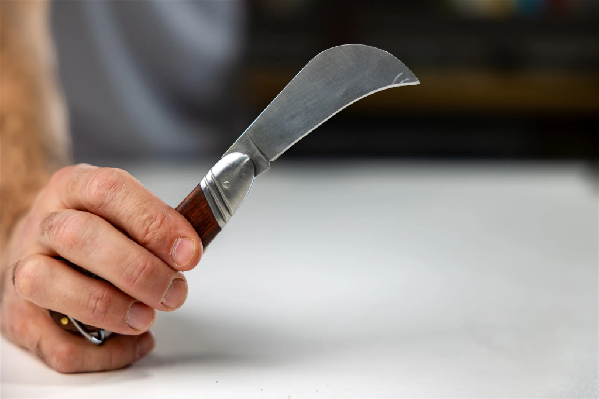
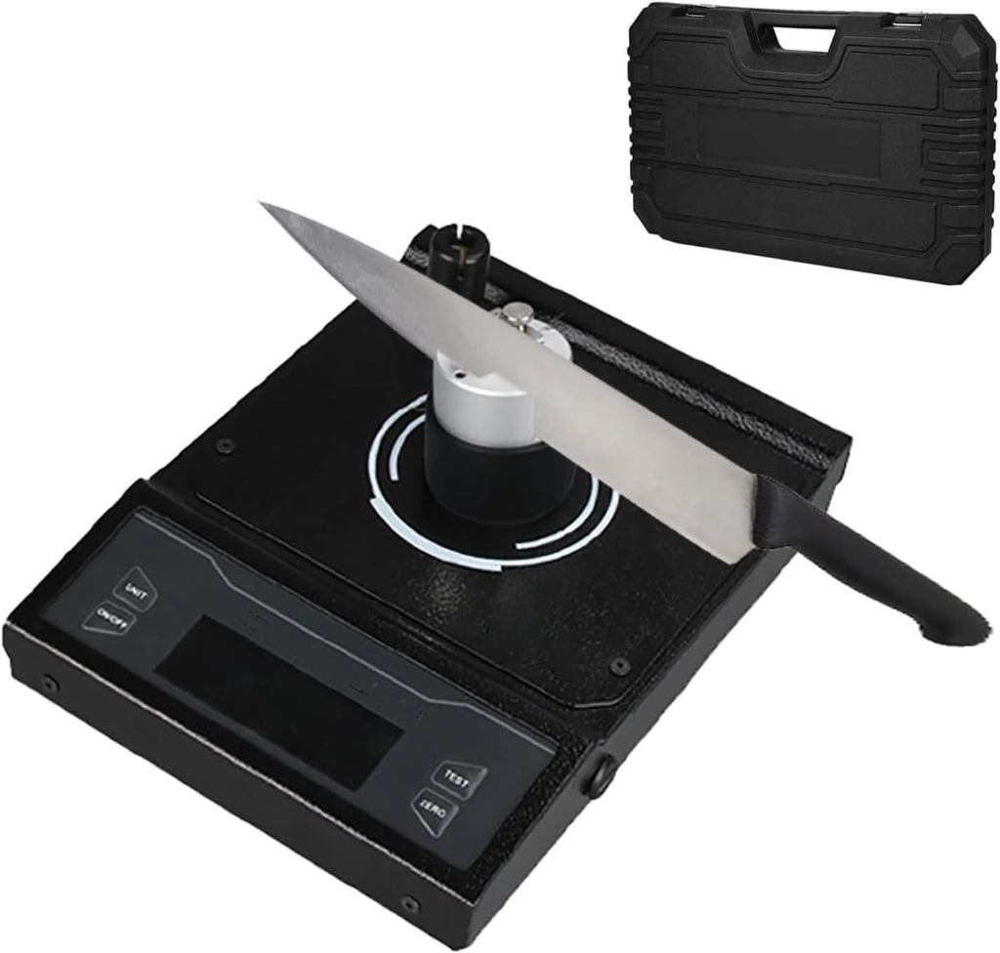
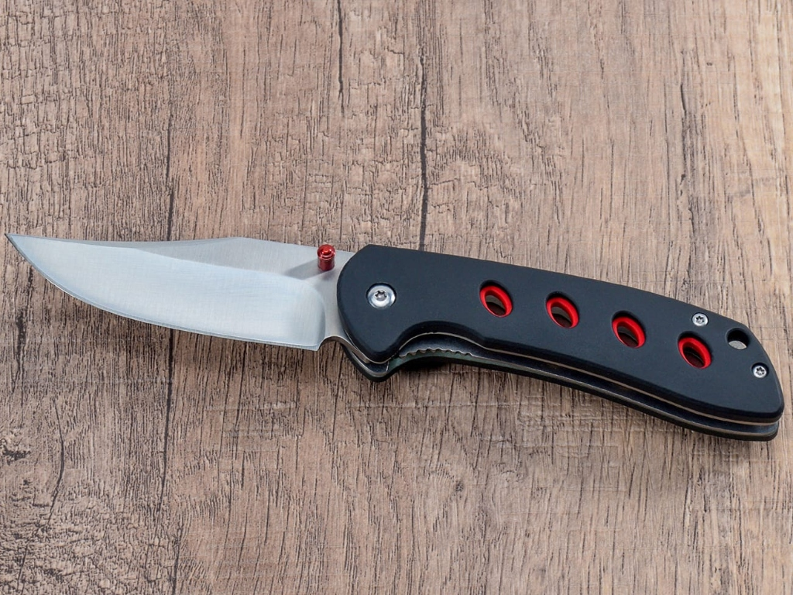
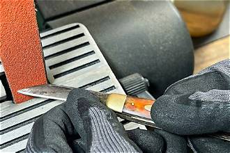
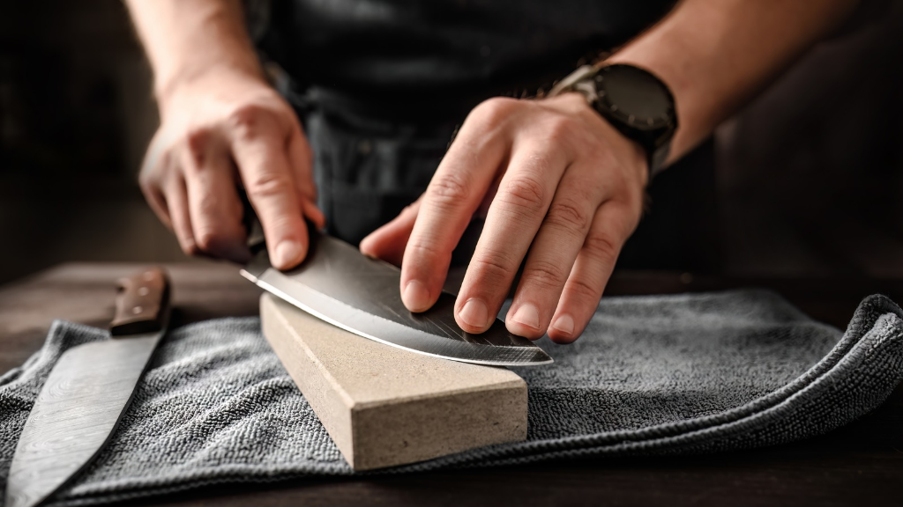

1
Choose a Service
Review our sharpening and repair options for Western knives, Japanese cutlery, serrated slicers, or restoration work.
Sharp knives make everyday cooking safer, faster, and more satisfying. Whether you prepare meals for your family or command a commercial line, we keep your essential blades cutting cleanly.

Not all kitchen knives are created equal. A sturdy German chef knife features softer steel with a wider bevel designed for rocking cuts, while a Japanese Gyuto uses ultra-hard carbon steel with an acute apex for delicate push-slicing.
Sharpening each knife style requires matching the bevel geometry to its alloy and purpose. Using the wrong stone or angle can cause brittle micro-chipping or premature dulling.
Western Cutlery: 18°–20° durable bevels that resist bone contact and board impact.
Japanese Cutlery: 12°–15° precision bevels that glide through proteins without cellular bruising.

Four simple steps to restore clean cutting performance to your knives.
Review our sharpening and repair options for Western knives, Japanese cutlery, serrated slicers, or restoration work.
Submit your sharpening booking online or bring your safely wrapped knives to our drop-off location.
We inspect edge integrity and metallurgy, then hand-hone on progressive waterstones with zero friction overheating.
Receive notification once your blades pass paper-slice inspection, ready for collection and immediate culinary use.
Repair suitability depends on careful workbench inspection of steel condition, spine thickness, and structural integrity.

Restoring straightness to rolled, wavy, or uneven edges. We correct secondary bevel asymmetry to ensure smooth, straight cuts through tough vegetables.

Nicks caused by bone strikes or ceramic plates are carefully evaluated. We determine how much metal must be removed while preserving the knife's natural profile.

Tightening loose rivets, sanding rough scales, and treating dried wood with food-safe oils and wax to ensure a safe, comfortable grip during food preparation.

Surface oxidation removal, gentle patina stabilization, and non-destructive polishing for neglected family heirlooms and vintage kitchen cutlery.
Simple maintenance habits between professional sharpenings extend edge life and preserve fine kitchen steel.
Hand wash with mild soap and warm water immediately after use. Never place fine cutlery in a dishwasher.
Store blades in a dedicated wooden block, magnetic strip, or blade guard to prevent edge-to-edge drawer collisions.
Cut only on end-grain wood or soft rubber boards. Never cut on glass, granite, or ceramic surfaces.
When a knife slides off tomato skin or crushes herb leaves instead of slicing, it is time for waterstone honing.

Bring precision back to your culinary preparation. Book your sharpening appointment online or drop by our workshop during regular bench intake hours.